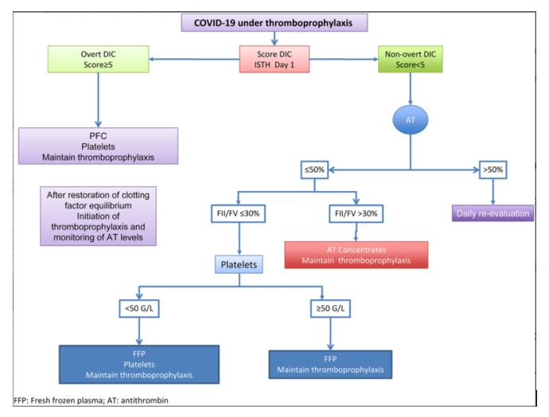

- COVID‐19 is a systemic infection with a significant impact on the hematopoietic
system and hemostasis.
- Severe acute respiratory syndrome coronavirus 2 (SARS‐CoV‐2)
causing coronavirus disease 2019 (COVID‐19) has rapidly evolved from an epidemic
outbreak in Wuhan, China1 into a pandemic infecting more than 1 million individuals
all over the world.
- Billions of citizens are affected by measures of social
distancing and the socioeconomic impact of the pandemic.
- Note, SARS‐CoV‐2 is
approximately 80% similar to SARS‐CoV and invades host human cells by binding
to the angiotensin‐converting enzyme 2 (ACE2) receptor.
- There are some key differences between flu and COVID-19.
COVID-19 seems to spread more easily than flu and causes more
serious illnesses in some people.
- It can also take longer before people show symptoms and people can
be contagious for longer.
Fig 6 : Covid-19 symptoms
- Another important difference is there is a vaccine to protect
against flu. There is currently no vaccine to prevent COVID-19.
- Because some of the symptoms of flu and COVID-19 are similar,
it may be hard to tell the difference between them based on symptoms
alone, and testing may be needed to help confirm a diagnosis.
- Although it is well documented that COVID‐19 is primarily manifested as a respiratory
tract infection, emerging data indicate that it should be regarded as a systemic
disease involving multiple systems, including cardiovascular, respiratory,
gastrointestinal, neurological, hematopoietic and immune system.2-4 Mortality
rates of COVID‐19 are lower than SARS and Middle East Respiratory Syndrome (MERS)
- however, COVID‐19 is more lethal than seasonal flu. Older people and those with
comorbidities are at increased risk of death from COVID‐19, but younger people
without major underlying diseases may also present with potentially lethal
complications such as fulminant myocarditis and disseminated intravascular coagulopathy (DIC)
Proposed algorithm for covid-19:

Fig 7: A proposed treatment algorithm for managing patients with COVID- 19